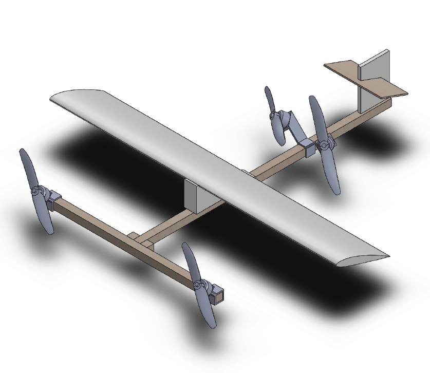
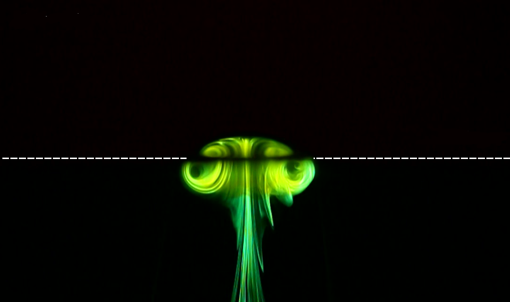

me@beverleyy:~
Harmonic Balance Framework for Transonic Aeroelasticity
Singapore Aerospace Program Cycle 16
Supervisor: Dr. Daniel Wise, Dr. Vinh-Tan Nguyen
- Developed and implemented harmonic balance-based framework for generalized aerodynamic force calculations for use in transonic flutter prediction of NASA CRM wings.
08.2022 - 08.2023
Research
A*STAR/MOE Scientists-in-Schools Program
Zhangde Primary School Primary 5 E2K
Supervisor: Dr. Li Hongying
- Designed lesson plan to introduce students to basic Python programming and running a CFD code
- Simple self-contained Jupyter notebook for 2D lid-driven cavity flow using finite-volume solver that students can fill in values and run easily
09.2022 - 04.2023
Code
Gradcafe Data Analysis
Anxiety relief project while waiting for graduate school admissions results
- Scrape Gradcafe HTML
- Parse scraped HTML with BeautifulSoup
- Analyze and manipulate data with Pandas
01.2023
Code
Master of Engineering (Mechanical & Aerospace Engineering)
Nanyang Technological University, Singapore
Aug 2021 - Feb 2023
CGPA: 4.63 / 5.00
Thesis
Investigating Galilean invariance in CFD
Coursework
- Advanced Engineering Mathematics
- Advanced Thermal Engineering
- Computational Methods in Engineering
- Design & Analysis of Experiments
- Finite Element Methods
08.2021 - 08.2022
Education
Investigating Galilean Invariance in CFD
Masters Thesis
Supervisors: Dr. Basman Elhadidi, Dr. Chan Wai Lee
Description
- Comparison between flow properties and wakes calculated from CFD simulations (LES, DNS) of moving body in stationary flow vs stationary body in moving flow.
- Implementation of transitional turbulence model with overset mesh in OpenFOAM.
05.2021 - present
Research

Bloomscroller
MindfulHacks 2021 - 1st (Team)
Non-intrusive browser extension for Twitter that combats doomscrolling using AI, gamification, and psychology.
09.2021
Code
Bachelor of Engineering (Aerospace Engineering)
Nanyang Technological University, Singapore
Jul 2017 - Jun 2021
CGPA: 4.37 / 5.00 (Honors with Distinction)
Awards & Scholarships
- CN Yang Scholars Programme
- CNYSP Research Award (Gold)
- Dean's List AY19/20
- Nanyang Scholarship
- Professional Attachment Certificate of Distinction
- T.H. New Flow Visualization Award
Looking for my NTU MAE PYP solutions? Click here!
Looking for my NTU MAE cheatsheets? Click here!
08.2017 - 06.2021
Education
Flow behavior of confined vortex-rings
Final Year Project
Supervisor: Dr. Daniel New
Description
- CFD simulations of vortex-rings in confined domain.
- Experimental validation of CFD simulations using dye flow visualization.
- Investigation of wall shear stress and pressure induced by vortex-rings on confinement wall.
12.2020 - 06.2021
Research

Weird Take-Off and Landing UAV
UAV Senior Design
Novel quadrotor VTOL concept to improve transition performance using two forward-canted rotors at the front and two outward-canted rotors at the back.
01.2021 - 06.2021
Engineering
Fusing communication skills with engineering knowledge
Supervisor: Dr. Chan Wai Lee
Coteaching program to improve engineering students’ communication skills
- Statistics analysis in MATLAB from a study of different teaching programs to determine usefulness of coteaching program.
- Transcription of recorded focus group discussions with participants.
- Qualitative analysis of participants’ learning outcomes and feedback.
05.2020 - 07.2021
Research

Self-help attendance check
Part of coteaching project
This page was made to reduce emails by automating retrieval of participants' attendance records.
02.2021
Code
System identification of novel VTOL UAV
Supervisor: Dr. Basman Elhadidi
Description
- Investigate possibility to reduce wind tunnel usage in aerodynamic analysis and determine aerodynamic coefficients from dynamic system response.
- Develop least-square regression models combined with usage of MATLAB system identification toolbox to determine stability and aerodynamic coefficients.
06.2019 - 05.2021
Research

This is Anfield - Isometric Drawing
Photoshop
Illustrator
08.2020
Design
Overseas Exchange
Purdue University
Aeronautics & Astronautics
- Aerospace Structural Analysis
- Computational Aerodynamics
- Experimental Aerodynamics
- Spacecraft Design
- Thermal Sciences
Awards & Scholarships
- Dean's List & Semester Honors, Spring 2020
01.2020 - 05.2020
Education

Project Escalator
Senior Spacecraft Design
- Numerical simulation and investigation of propellantless space propulsion technologies and cycler vehicle trajectories to and from Mars using MATLAB/Simulink.
- Investigate cycler vehicle dynamics and design of controller.
- As webmaster, I also designed all the promotional material for the project (website, banner, brochure).
01.2020 - 05.2020
Engineering

Year in Pixels
A simple diary-like webpage with a Javascript-generated grid. Fake backend with Google Sheets for easy data entry.
01.2020
Code

Flow transitions of vortex-ring collisions
CN Yang Scholars Programme Undergraduate Research
Supervisor: Dr. Daniel New
Description
- Planar laser-induced fluorescence
- Time-resolved particle-image velocimetry
Published in
- Journal of Visualization
- 15th Asian Symposium on Visualization
- 17th European Turbulence Conference
12.2017 - 06.2020
Research
Mini Delivery Quadcopter
Making & Tinkering - Drone Inc.
Modified racing drone for autonomous package delivery.
06.2018 - 08.2018
Engineering
Singapore-Cambridge GCE 'A' Level
National Junior College
Integrated Programme
2011-2016
Subjects
- H1 Chinese (B)
- H1 General Paper (A)
- H1 Project Work (A)
- H2 Chemistry (A)
- H2 Economics (A)
- H2 Mathematics (A)
- H2 Physics (A)
01.2011 - 12.2016
Education

MagnusThemes
Free Tumblr Themes
A long-standing hobby that started as an exercise for me to pick up coding: Free blog themes and custom page templates for Tumblr, a social media blogging platform. Fun, quirky, sleek, and (mostly) bug-free. My Q&A responses need work, though :)
01.2014 - present
Design